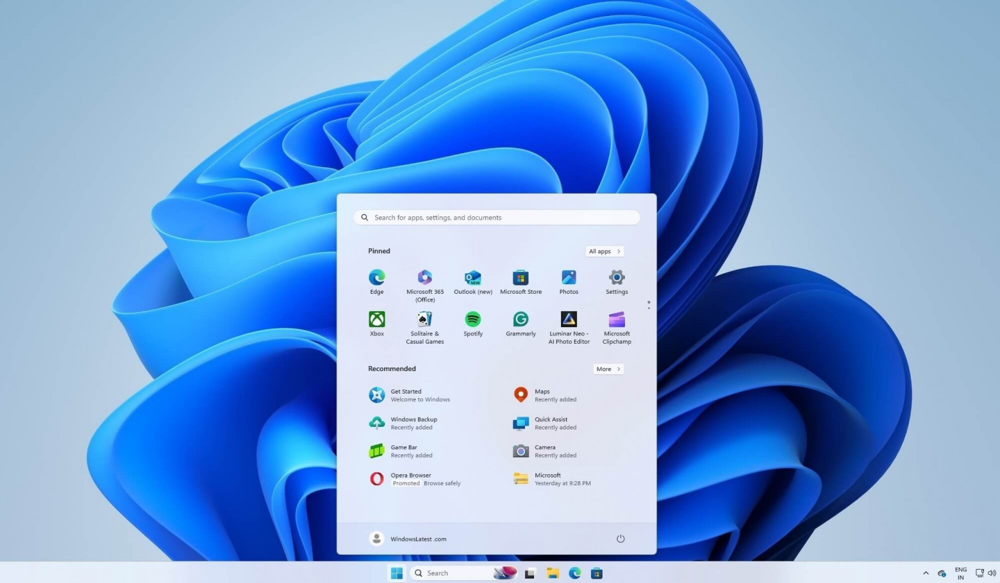

Декабрьские обновления Windows 11 приводят к поломке меню «Пуск» и другим багам

Обновления Windows 11 за декабрь 2024 года приводят к тому, что меню «Пуск» перестаёт работать, а иногда отображается отличным от темы Windows цветом. Также сообщается о проблемах с изображением: у некоторых пользователей после обновления экран стал тусклым, а белый цвет желтоватым.
По данным WindowsLatest, проблемы отмечаются после установки обновлений KB5048667 для Windows 11 24H2 и KB5048685 для Windows 11 23H2. С меню «Пуск» связано сразу несколько:
- меню «Пуск» перестаёт работать в сеансах VDI. По данным WindowsLatest, для решения нужно изменить реестр, добавив StartMenuExper в UviProcessExcludes. После этого нужно перезагрузить систему.
- меню «Пуск» перестаёт работать, когда Windows 11 обнаруживает, что у пользователя установлена старая версия пакета MSVCP_140_APP.dll. Это приводит к сбою StartMenuExperienceHost.exe. Исправить это поможет установка Microsoft.VCLibs.140.00 или удаление старой версии через PowerShell.
- KB5048667 меняет цветовую тему поиска меню «Пуск»: поиск начинает отображаться белым цветом при использовании тёмной темы Windows.
Также сообщается, что компания может запретить пополнять счёт Apple ID, покупать приложения в App Store и оформлять подписки. При этом источник издания считает, что на это Apple не пойдёт. Сейчас пользователи могут оплачивать подписки и приложения в App Store с помощью счёта мобильного телефона.
Других деталей у журналистов нет. Также издание не называет, кто передал информацию, ссылаясь на желание информатора остаться анонимным.